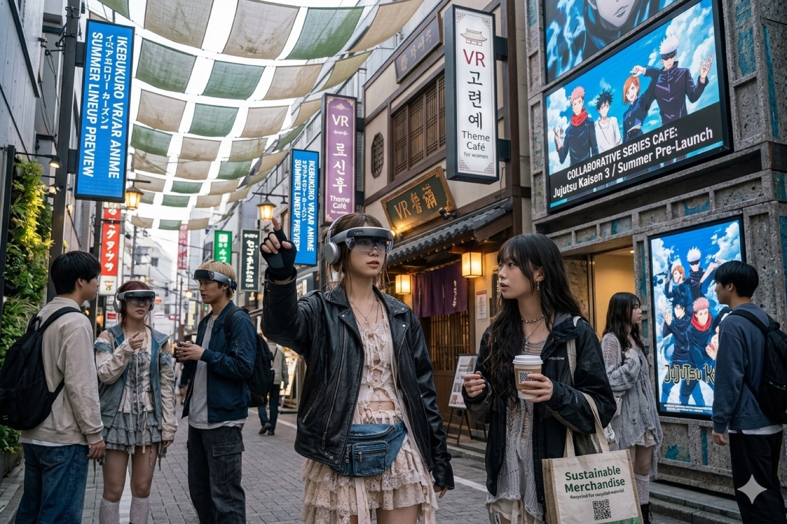

A lista de verão de 2026 da KADOKAWA inclui SEKIRO: NO DEFEAT, reforçando uma tendência clara: games japoneses de prestígio viraram fonte natural para anime de alto apelo internacional.

O desafio é grande. Sekiro é lembrado por precisão, morte, ritmo e tensão corporal. Adaptar isso para anime não significa apenas contar a história: significa traduzir tempo de reação, peso da lâmina e punição do erro.
O que a adaptação precisa resolver
Obras vindas de games funcionam quando entendem que gameplay não é detalhe. A linguagem do jogador precisa virar mise-en-scène: cortes, som, pausa e coreografia devem comunicar aquilo que antes era sentido no controle.